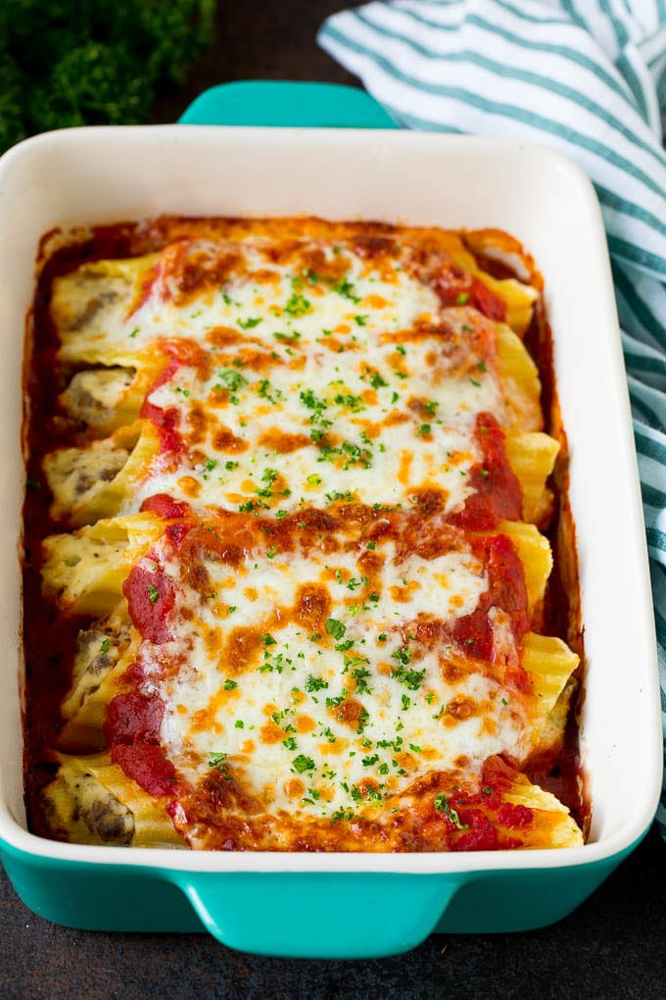

Three Cheese broccoli Manicotti

Description
This 3-cheese, saucy, Italian comfort food is loaded with broccoli and elevated with a bit of hot Italian sausage in the sauce—it's the perfect culinary combo!
The manicotti shells are partially cooked in boiling water, and they finish cooking in the sauce while the entire dish is baked in the oven.
Like many Italian dishes, this might even be better the next day! Enjoy hot or cold.
Ingredients
- 2 large heads broccoli
- 1 (8 ounce) package manicotti shells
- 2 cloves garlic, crushed
- 1 cup ricotta cheese
- 4 ounces grated provolone cheese
- 1 ½ cups grat ed Parmigiano-Reggiano cheese, divided, or more to taste
- 2 large eggs, beaten
- 2 teaspoons kosher salt, or to taste
- 1 pinch cayenne pepper, or to taste
- 1 teaspoon freshly ground black pepper
- 1 pinch freshly grated nutmeg
- 3 ½ cups prepared marinara sauce
- 2 ½ cups water
- 6 ounces cooked, crumbled, hot Italian sausage
- 1 tablespoon freshly chopped Italian parsley, or to taste
Steps
- Bring a pot of generously salted water to a boil.
- Meanwhile, separate broccoli stems and florets. Cut florets in half and cut each stem into several pieces lengthwise.
- Place stems in the boiling water and cook for 3 to 4 minutes. Then add florets and cook until just barely tender, about 3 more minutes.
- Use a slotted spoon to transfer broccoli to a bowl of cold water, leaving the water boiling on the stove. Let broccoli sit until cool, about 2 minutes. Transfer to a colander and let sit until very well drained. Leave the bowl of cold water for the pasta.
- Meanwhile, add manicotti to the boiling water and cook, stirring occasionally, until tender but slightly undercooked, 6 to 7 minutes. Use a slotted spoon to gently transfer manicotti into the bowl of cold water.
- Chop cooled, drained broccoli into small pieces. Transfer 3 cups chopped broccoli to a mixing bowl and reserve any extra for another use.
- Add garlic, ricotta, provolone, 1 ¼ cups Parmigiano-Reggiano, eggs, salt, cayenne, pepper, and nutmeg to the broccoli. Mix with a spoon until thoroughly combined. Cover and refrigerate until needed.
- Preheat the oven to 375 degrees F (190 degrees C).
- Bring tomato sauce and water to a simmer over medium-high heat.
- Ladle ½ inch hot sauce into a 9x13-inch baking dish or lasagna pan. Sprinkle in cooked Italian sausage.
- Transfer broccoli filling into a pastry bag. Cut off the tip slightly smaller than the opening of the manicotti. Gently pipe stuffing into 12 manicotti, being careful not to overstuff. Place stuffed manicotti in the sauce in the baking dish, angling as necessary to fit.
- Ladle in just enough sauce to barely cover the manicotti. Sprinkle ¼ cup Parmigiano-Reggiano over top.
- Bake in the center of the preheated oven until hot and bubbly, 25 to 30 minutes.
- Garnish with parsley and let sit for 10 minutes.
- Serve two manicotti per bowl, garnished with more Parmigiano-Reggiano.